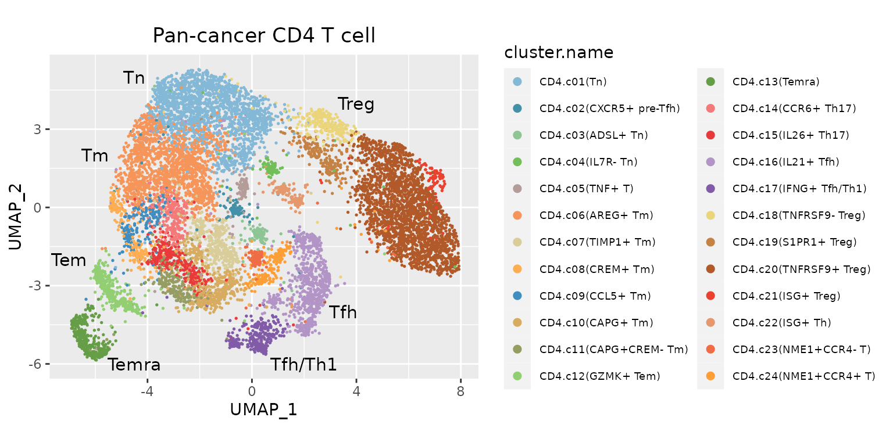
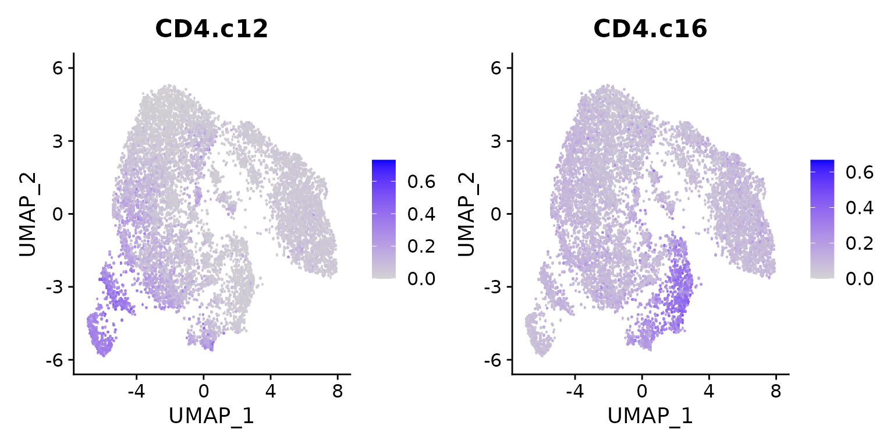
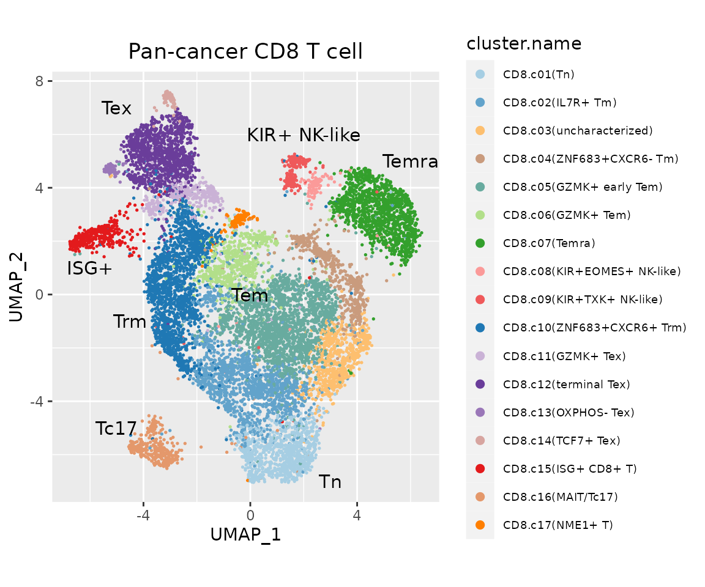
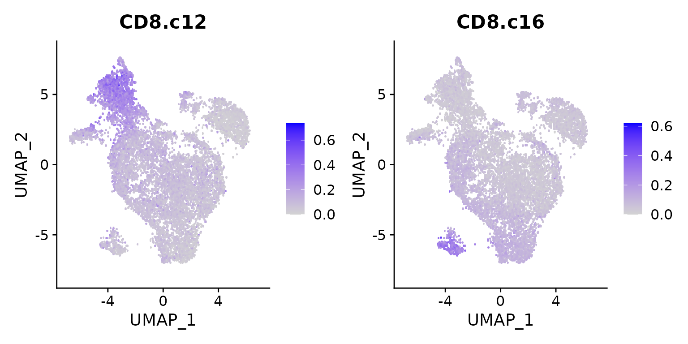

vignettes/model_pctl.Rmd
model_pctl.RmdIn this tutorial, we showed how to build reference model for a tumor infiltrated pan-cancer T cell atlas 1.
library(Seurat)
library(ProjectSVR)
library(tidyverse)
options(timeout = max(3600, getOption("timeout")))
if (!dir.exists("reference")) dir.create("reference")
download.file(url = "https://zenodo.org/record/8350746/files/ZhengLiangtao.CD4.seurat.slim.qs",
destfile = "reference/ZhengLiangtao.CD4.seurat.slim.qs")
download.file(url = "https://zenodo.org/record/8350746/files/ZhengLiangtao.CD8.seurat.slim.qs",
destfile = "reference/ZhengLiangtao.CD8.seurat.slim.qs")The original paper 1 adopted a “metacell-like” strategy for data integration. We mapped the coordinates of metacells in UMAP space to single cells and trained supported vector regression (SVR) model on them.
data("pals")
seu.ref <- qs::qread("reference/ZhengLiangtao.CD4.seurat.slim.qs")
data.plot <- seu.ref@misc$data.refplot$meta.data
text.pos <- data.frame(
x = c(-4.5, 4, 3.5, 2, -4.5, -7, -6),
y = c( 5, 4, -4, -6, -6, -2, 2),
label = c("Tn", "Treg", "Tfh", "Tfh/Th1", "Temra", "Tem", "Tm")
)
## meta cell reference
ggplot(data.plot, aes(UMAP_1, UMAP_2, color = cluster.name), pt.size = .4) +
geom_point(size = .3) +
ggtitle("Pan-cancer CD4 T cell") +
scale_color_manual(values = pals$`pan-cancer_cd4t`) +
geom_text(inherit.aes = F, data = text.pos, mapping = aes(x, y, label = label), size = 4) +
guides(color = guide_legend(override.aes = list(size = 2))) +
coord_equal(ratio = 1) +
theme(legend.text = element_text(size = 7),
plot.title = element_text(hjust = .5))
We utilized the author defined markers stored in
seu.ref@misc$markers as features to calculate the gene set
scores. These markers were ordered by significance. We extracted the top
20 most significant genes for each cell state.
top.genes <- seu.ref@misc$markers
top.genes <- lapply(top.genes, function(xx) head(xx, 20))
sapply(top.genes, length)## CD4.c01 CD4.c02 CD4.c03 CD4.c04 CD4.c05 CD4.c06 CD4.c07 CD4.c08 CD4.c09 CD4.c10
## 20 20 20 20 20 20 20 20 20 20
## CD4.c11 CD4.c12 CD4.c13 CD4.c14 CD4.c15 CD4.c16 CD4.c17 CD4.c18 CD4.c19 CD4.c20
## 20 20 20 20 20 20 20 20 20 20
## CD4.c21 CD4.c22 CD4.c23 CD4.c24
## 20 20 20 20
seu.ref <- ComputeModuleScore(seu.ref, gene.sets = top.genes, method = "UCell", cores = 5)
# The signature score matrix is stored in 'SignatureScore' assay
Assays(seu.ref)## [1] "RNA" "SignatureScore"
DefaultAssay(seu.ref) <- "SignatureScore"
FeaturePlot(seu.ref, features = c("CD4.c12", "CD4.c16"), pt.size = 3)
gss.mat <- FetchData(seu.ref, vars = rownames(seu.ref))
embeddings.df <- FetchData(seu.ref, vars = paste0("UMAP_", 1:2))
batch.size = 8000 # number of subsampled cells for each SVR model
n.models = 20 # number of SVR models trained
umap.model <- FitEnsembleSVM(feature.mat = gss.mat,
emb.mat = embeddings.df,
batch.size = batch.size,
n.models = n.models,
cores = 10)meta.data: metacell meta data (embeddings & cell type information)
gss.method: method used in
ComputeModuleScore()
[optional] colors: for plots
[optional] text.pos: text annotation on the reference plots
meta.data <- seu.ref@misc$data.refplot$meta.data
colors <- pals$`pan-cancer_cd4t`
bg.genes <- rownames(seu.ref[["RNA"]])
reference <- CreateReference(umap.model = umap.model,
gene.sets = top.genes,
bg.genes = bg.genes,
meta.data = meta.data,
gss.method = "UCell",
colors = colors,
text.pos = text.pos)
dir.create("models")
saveRDS(reference, "models/model.Zheng2021.CD4Tcell.rds")## used (Mb) gc trigger (Mb) max used (Mb)
## Ncells 7251877 387.3 10535532 562.7 10535532 562.7
## Vcells 348584305 2659.5 732634775 5589.6 615648620 4697.1
data.plot <- seu.ref@misc$data.refplot$meta.data
text.pos <- data.frame(
x = c(-6, -5, 2, 6, 3, -5, -4.5, 0),
y = c( 1, 7, 6, 5, -7, -5, -1 , 0),
label = c("ISG+", "Tex", "KIR+ NK-like", "Temra", "Tn", "Tc17", "Trm", "Tem")
)
## meta cell reference
ggplot(data.plot, aes(UMAP_1, UMAP_2, color = cluster.name), pt.size = .4) +
geom_point(size = .3) +
ggtitle("Pan-cancer CD8 T cell") +
scale_color_manual(values = pals$`pan-cancer_cd8t`) +
geom_text(inherit.aes = F, data = text.pos, mapping = aes(x, y, label = label), size = 4) +
guides(color = guide_legend(override.aes = list(size = 2), ncol = 1)) +
coord_equal(ratio = 1) +
theme(legend.text = element_text(size = 7),
plot.title = element_text(hjust = .5))
top.genes <- seu.ref@misc$markers
top.genes <- lapply(top.genes, function(xx) head(xx, 20))
sapply(top.genes, length)## CD8.c01 CD8.c02 CD8.c03 CD8.c04 CD8.c05 CD8.c06 CD8.c07 CD8.c08 CD8.c09 CD8.c10
## 20 20 7 20 20 20 20 20 20 20
## CD8.c11 CD8.c12 CD8.c13 CD8.c14 CD8.c15 CD8.c16 CD8.c17
## 20 20 20 20 20 20 20
seu.ref <- ComputeModuleScore(seu.ref, gene.sets = top.genes, method = "UCell", cores = 5)
# The signature score matrix is stored in 'SignatureScore' assay
Assays(seu.ref)## [1] "RNA" "SignatureScore"
DefaultAssay(seu.ref) <- "SignatureScore"
FeaturePlot(seu.ref, features = c("CD8.c12", "CD8.c16"), pt.size = 3)
gss.mat <- FetchData(seu.ref, vars = rownames(seu.ref))
embeddings.df <- FetchData(seu.ref, vars = paste0("UMAP_", 1:2))
batch.size = 8000 # number of subsampled cells for each SVR model
n.models = 20 # number of SVR models trained
umap.model <- FitEnsembleSVM(feature.mat = gss.mat,
emb.mat = embeddings.df,
batch.size = batch.size,
n.models = n.models,
cores = 10)
meta.data <- seu.ref@misc$data.refplot$meta.data
colors <- pals$`pan-cancer_cd8t`
bg.genes <- rownames(seu.ref[["RNA"]])
reference <- CreateReference(umap.model = umap.model,
gene.sets = top.genes,
bg.genes = bg.genes,
meta.data = meta.data,
gss.method = "UCell",
colors = colors,
text.pos = text.pos)
dir.create("models")
saveRDS(reference, "models/model.Zheng2021.CD8Tcell.rds")## R version 4.1.2 (2021-11-01)
## Platform: x86_64-pc-linux-gnu (64-bit)
## Running under: Ubuntu 22.04.2 LTS
##
## Matrix products: default
## BLAS: /usr/lib/x86_64-linux-gnu/blas/libblas.so.3.10.0
## LAPACK: /usr/lib/x86_64-linux-gnu/lapack/liblapack.so.3.10.0
##
## locale:
## [1] LC_CTYPE=C.UTF-8 LC_NUMERIC=C LC_TIME=C.UTF-8
## [4] LC_COLLATE=C.UTF-8 LC_MONETARY=C.UTF-8 LC_MESSAGES=C.UTF-8
## [7] LC_PAPER=C.UTF-8 LC_NAME=C LC_ADDRESS=C
## [10] LC_TELEPHONE=C LC_MEASUREMENT=C.UTF-8 LC_IDENTIFICATION=C
##
## attached base packages:
## [1] stats graphics grDevices utils datasets methods base
##
## other attached packages:
## [1] lubridate_1.9.2 forcats_1.0.0 stringr_1.5.0 dplyr_1.1.3
## [5] purrr_1.0.2 readr_2.1.4 tidyr_1.3.0 tibble_3.2.1
## [9] ggplot2_3.4.3 tidyverse_2.0.0 ProjectSVR_0.2.0 SeuratObject_4.1.3
## [13] Seurat_4.3.0.1
##
## loaded via a namespace (and not attached):
## [1] utf8_1.2.3 spatstat.explore_3.2-3 reticulate_1.31
## [4] tidyselect_1.2.0 mlr3learners_0.5.6 htmlwidgets_1.6.2
## [7] BiocParallel_1.28.3 grid_4.1.2 Rtsne_0.16
## [10] mlr3misc_0.12.0 munsell_0.5.0 codetools_0.2-18
## [13] bbotk_0.7.2 ragg_1.2.5 ica_1.0-3
## [16] future_1.33.0 miniUI_0.1.1.1 mlr3verse_0.2.8
## [19] withr_2.5.0 spatstat.random_3.1-6 colorspace_2.1-0
## [22] progressr_0.14.0 highr_0.10 knitr_1.43
## [25] uuid_1.1-1 rstudioapi_0.15.0 stats4_4.1.2
## [28] ROCR_1.0-11 robustbase_0.99-0 tensor_1.5
## [31] listenv_0.9.0 labeling_0.4.3 mlr3tuning_0.19.0
## [34] lgr_0.4.4 polyclip_1.10-4 farver_2.1.1
## [37] rprojroot_2.0.3 parallelly_1.36.0 vctrs_0.6.3
## [40] generics_0.1.3 xfun_0.40 timechange_0.2.0
## [43] diptest_0.76-0 R6_2.5.1 doParallel_1.0.17
## [46] clue_0.3-64 flexmix_2.3-19 spatstat.utils_3.0-3
## [49] cachem_1.0.8 promises_1.2.1 scales_1.2.1
## [52] nnet_7.3-17 gtable_0.3.4 globals_0.16.2
## [55] mlr3hyperband_0.4.5 goftest_1.2-3 mlr3mbo_0.2.1
## [58] rlang_1.1.1 systemfonts_1.0.4 GlobalOptions_0.1.2
## [61] splines_4.1.2 lazyeval_0.2.2 paradox_0.11.1
## [64] spatstat.geom_3.2-5 checkmate_2.2.0 yaml_2.3.7
## [67] reshape2_1.4.4 abind_1.4-5 mlr3_0.16.1
## [70] backports_1.4.1 httpuv_1.6.11 tools_4.1.2
## [73] ellipsis_0.3.2 jquerylib_0.1.4 RColorBrewer_1.1-3
## [76] BiocGenerics_0.40.0 ggridges_0.5.4 Rcpp_1.0.11
## [79] plyr_1.8.8 deldir_1.0-9 pbapply_1.7-2
## [82] GetoptLong_1.0.5 cowplot_1.1.1 S4Vectors_0.32.4
## [85] zoo_1.8-12 ggrepel_0.9.3 cluster_2.1.2
## [88] fs_1.6.3 magrittr_2.0.3 data.table_1.14.8
## [91] scattermore_1.2 circlize_0.4.15 lmtest_0.9-40
## [94] RANN_2.6.1 fitdistrplus_1.1-11 matrixStats_1.0.0
## [97] stringfish_0.15.8 qs_0.25.5 hms_1.1.3
## [100] patchwork_1.1.3 mime_0.12 evaluate_0.21
## [103] xtable_1.8-4 mclust_6.0.0 IRanges_2.28.0
## [106] gridExtra_2.3 shape_1.4.6 UCell_1.3.1
## [109] compiler_4.1.2 mlr3cluster_0.1.8 KernSmooth_2.23-20
## [112] crayon_1.5.2 htmltools_0.5.6 tzdb_0.4.0
## [115] later_1.3.1 RcppParallel_5.1.7 RApiSerialize_0.1.2
## [118] ComplexHeatmap_2.10.0 MASS_7.3-55 fpc_2.2-10
## [121] mlr3data_0.7.0 Matrix_1.6-1 cli_3.6.1
## [124] parallel_4.1.2 igraph_1.5.1 pkgconfig_2.0.3
## [127] pkgdown_2.0.7 sp_2.0-0 plotly_4.10.2
## [130] spatstat.sparse_3.0-2 foreach_1.5.2 bslib_0.5.1
## [133] mlr3fselect_0.11.0 digest_0.6.33 sctransform_0.3.5
## [136] RcppAnnoy_0.0.21 mlr3filters_0.7.1 spatstat.data_3.0-1
## [139] rmarkdown_2.24 leiden_0.4.3 uwot_0.1.16
## [142] kernlab_0.9-32 shiny_1.7.5 modeltools_0.2-23
## [145] rjson_0.2.21 lifecycle_1.0.3 nlme_3.1-155
## [148] jsonlite_1.8.7 mlr3tuningspaces_0.4.0 desc_1.4.2
## [151] viridisLite_0.4.2 fansi_1.0.4 pillar_1.9.0
## [154] lattice_0.20-45 fastmap_1.1.1 httr_1.4.7
## [157] DEoptimR_1.1-2 survival_3.2-13 glue_1.6.2
## [160] mlr3viz_0.6.1 png_0.1-8 prabclus_2.3-2
## [163] iterators_1.0.14 spacefillr_0.3.2 class_7.3-20
## [166] stringi_1.7.12 sass_0.4.7 mlr3pipelines_0.5.0-1
## [169] palmerpenguins_0.1.1 textshaping_0.3.6 memoise_2.0.1
## [172] irlba_2.3.5.1 future.apply_1.11.0